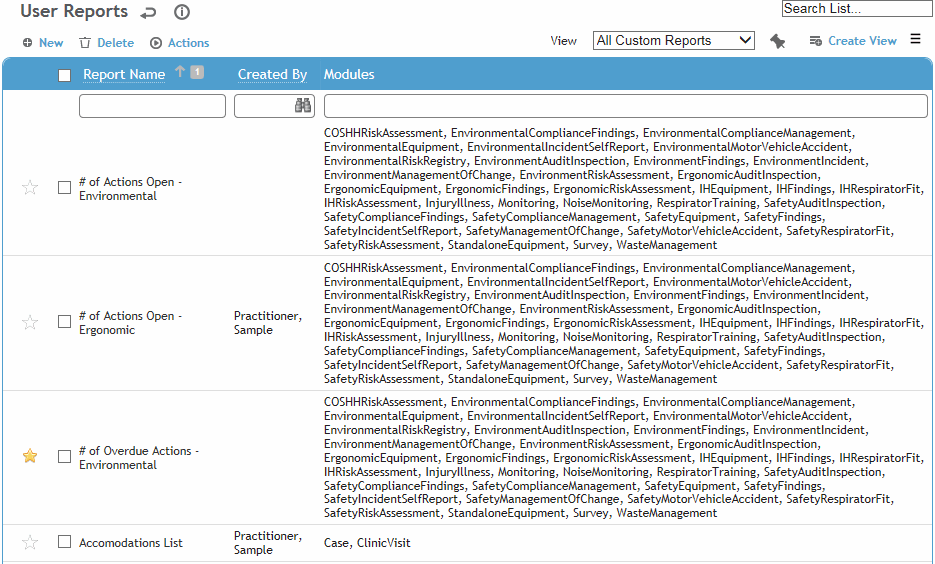

In the Business Intelligence menu, click Query Builder (or Report Writer).

Click the star to mark frequently-used reports as Favorites. You can then quickly access them via the Favorites view in the Reports list, or the My Favorite Reports gadget on the Advanced Dashboard (see Using the Advanced Dashboard).
Select the checkbox beside one or more reports and do one of the following:
To make a copy of the report, choose Actions»Copy. A new report will be created with “Copy” at the end of the report name. It contains the same view, selected fields and criteria, is marked as created by you, and is not marked as a published report.
To send the report via email, choose Actions»Email. Change any of the message fields as required. The report is attached as a PDF. Note that PDF will be limited to 10,000 rows/records.
To export the content of a report to a spreadsheet, choose Actions»Export to Excel or Actions»Export to CSV.
You are prompted to identify the file name and location.
To save a PDF version of a report to print later, choose Actions»Export to PDF. When the PDF opens, choose the print or save function as required. Note that exports to PDF are limited to 10,000 rows/records.
To export the list of reports to a spreadsheet, choose Actions»Export List to Excel.
A system setting allows you to append the date and time to the report output (PDF, XLS) file name.
If case type security has been applied to your role, you will only see data that falls within your granted case types. If you have access to an employee’s records through role security, you can extract data on the employee regardless of your site security.
Data may be hidden based on your role and security privileges.